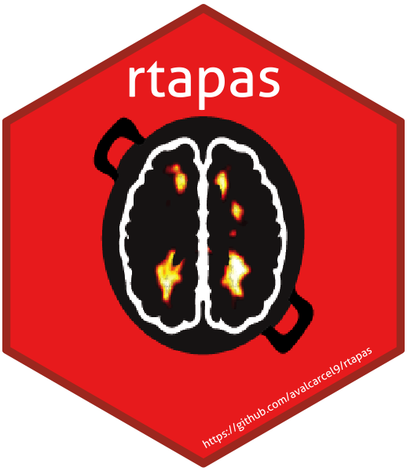

vignettes/tapas-vignette.Rmd
tapas-vignette.RmdThis package is documented using pkgdown. You can find the general rtapas pkgdown site here and the tutorial/vignette here. The GitHub tutorial/vignette is available here.

The rtapas package determines a subject-specific threshold to apply to multiple sclerosis lesion probability maps for automatic segmentation. This R package is based on the Thresholding Approach for Probability Map Automatic Segmentation (TAPAS) method. The methods are in progress for publication. This package creates the data structures necessary for training the TAPAS model. After training, the model can be used to predict subject-specific thresholds to use on probability maps for automatic lesion segmentation. Methods can be extended outside of multiple sclerosis lesion segmentation but have not been validated.
To install the package from Neuroconductor, type:
source("https://neuroconductor.org/neurocLite.R") neuro_install("rtapas")
To get the latest development version from GitHub:
# install.packages('remotes') library(remotes) remotes::install_github('avalcarcel9/rtapas')
TAPAS is a post-hoc approach to determine a subject-specific threshold for automatic segmentation of probability maps in the context of MS lesions. To apply TAPAS, users should first run an automatic segmentation method of choice to obtain probability maps. At this point, TAPAS can be applied in order to obtain subject-specific thresholds for segmentation. In the original TAPAS work we used MIMoSA (1,2) as the automatic segmentation algorithm to generate probability maps which has software available on Neuroconductor and documentation on GitHub. The data provided in this package and used throughout this vignette are synthetic. The package contains 15 3D “gold standard” masks that were created by Alessandra Valcarcel to appear similar to manually segmented lesion masks. The package also includes “probability maps” that were created by randomly generating uniform data for each subject inside of the “gold standard” masks and then smoothing the maps. Each map is generated using different end points so that the probability distribution is variable across subjects. The package also contains a single brain mask that applies to all synthetic gold standard and probability maps. The first slice is an empty slice while the second slice contains a the probability density and the gold standard manual segmentations. We use a single empty slice simply to make images 3D. Since these probability maps are generated randomly from a uniform distribution the spatial distribution of probability is quite different than real data.
The authors would like to re-iterate that all data available in the package and used throughout this vignette are synthetic and created by the authors simply for demonstration of the package usage. The data is meant to mimic a simple set of real data.
The data contained in this package contains 3D arrays for 15 synthetic gold standard segmentations (gs#), 15 probability maps (pmap#), and a single brain mask (brain_mask) that can be used for all 30 images. The # value noted can be any number 1-15. Package data is set to Lazy Data: true and will therefore be automatically loaded with the package. We use 10 subjects for training the TAPAS model and then evaluate the model using 5 subjects excluded from training in this tutorial. The gold standard segmentations and probability maps consist of a single slice with voxel values and a second slice where all voxels are equal to 0. The brain mask contains a brain mask value in both slices. These are saved as arrays which we will convert to nifti objects.
To use the data throughout this tutorial we will initialize the 10 gold standard masks, 10 probability maps, and 10 brain masks into a list.
The gold standard masks are all saved as gs#. We will use the first 10 to train the TAPAS model.
# Make a list of the gold standard masks train_gold_standard_masks = list(gs1 = gs1, gs2 = gs2, gs3 = gs3, gs4 = gs4, gs5 = gs5, gs6 = gs6, gs7 = gs7, gs8 = gs8, gs9 = gs9, gs10 = gs10) # Convert the gold standard masks to nifti objects train_gold_standard_masks = lapply(train_gold_standard_masks, oro.nifti::nifti)
The gold standard segmentations are visualized below:
# Show the gold standard masks using patchwork oro.nifti::image(train_gold_standard_masks$gs1) + oro.nifti::image(train_gold_standard_masks$gs2) + oro.nifti::image(train_gold_standard_masks$gs3) + oro.nifti::image(train_gold_standard_masks$gs4) + oro.nifti::image(train_gold_standard_masks$gs5) + oro.nifti::image(train_gold_standard_masks$gs6) + oro.nifti::image(train_gold_standard_masks$gs7) + oro.nifti::image(train_gold_standard_masks$gs8) + oro.nifti::image(train_gold_standard_masks$gs9) + oro.nifti::image(train_gold_standard_masks$gs10)
The probability maps are all saved as pmap#. We will use the first 10 to train the TAPAS model.
# Make a list of the training probability maps train_probability_maps = list(pmap1 = pmap1, pmap2 = pmap2, pmap3 = pmap3, pmap4 = pmap4, pmap5 = pmap5, pmap6 = pmap6, pmap7 = pmap7, pmap8 = pmap8, pmap9 = pmap9, pmap10 = pmap10) # Convert the probability maps to nifti objects train_probability_maps = lapply(train_probability_maps, oro.nifti::nifti)
The probability maps are visualized below:
# Show the probability maps using patchwork oro.nifti::image(train_probability_maps$pmap1, col = heat.colors(100)) + oro.nifti::image(train_probability_maps$pmap2, col = heat.colors(100)) + oro.nifti::image(train_probability_maps$pmap3, col = heat.colors(100)) + oro.nifti::image(train_probability_maps$pmap4, col = heat.colors(100)) + oro.nifti::image(train_probability_maps$pmap5, col = heat.colors(100)) + oro.nifti::image(train_probability_maps$pmap6, col = heat.colors(100)) + oro.nifti::image(train_probability_maps$pmap7, col = heat.colors(100)) + oro.nifti::image(train_probability_maps$pmap8, col = heat.colors(100)) + oro.nifti::image(train_probability_maps$pmap9, col = heat.colors(100)) + oro.nifti::image(train_probability_maps$pmap10, col = heat.colors(100))
There is only one brain mask included in the example data with this package. This mask was created manually just to cover all the “brain matter” in the gold standard masks and probability maps. Often each subject will have a unique brain mask depending on the registration technique. Below we create a list of brain masks so that the indices match the indices of the gold standard list and probability map list.
# Make a list of the brain masks train_brain_masks = list(brain_mask1 = brain_mask, brain_mask2 = brain_mask, brain_mask3 = brain_mask, brain_mask4 = brain_mask, brain_mask5 = brain_mask, brain_mask6 = brain_mask, brain_mask7 = brain_mask, brain_mask8 = brain_mask, brain_mask9 = brain_mask, brain_mask10 = brain_mask) # Convert the brain masks to nifti objects train_brain_masks = lapply(train_brain_masks, oro.nifti::nifti)
Before we can fit the TAPAS model, we have to generate the threshold data required for model input. The model requires the Sørensen–Dice coefficient value evaluated across all thresholds values for each subject in the training set. We suggest evaluating thresholds from 0 to 1 by 1% increments. This can be carried out using two functions: tapas_data and tapas_data_par. The tapas_data function will produce the model data for a single subject whereas tapas_data_par is a wrapper around tapas_data and will run in parallel for multiple subjects.
Below we will calculate the TAPAS model input data using the example data subject by subject using tapas_data. We implement a for loop for simplicity. The pmap, gold_standard, and mask inputs must be either a local object of class nifti or a vector of file paths to a nifti object. The subject_id is simply a vector of subject IDs. These can be character or numeric. For this example we set k = 0 since the data is only a single slice of segmented values and probability maps were randomly generated from a uniform. The thresholds and verbose inputs are all set to the default.
# Initialize an empty list to store results created on 1 core train_data1 = list() # Run tapas_data function for(i in 1:length(train_probability_maps)){ train_data1[[i]] = tapas_data(thresholds = seq(from = 0, to = 1, by = 0.01), pmap = train_probability_maps[[i]], gold_standard = train_gold_standard_masks[[i]], mask = train_brain_masks[[i]], k = 0, subject_id = train_ids[[i]], verbose = TRUE) }
The tapas_data_par function simply is a parallel wrapper around tapas_data. Before we look at the return objects from these functions let’s replicate the results from tapas_data using tapas_data_par with 2 cores. The tapas_data_par function is compatible with on both Unix and Windows machines. Again, the code below is going to run on 2 cores so be sure your machine has access to 2 cores or reduce back down to 1.
The inputs for tapas_data_par are similar to the tapas_data function but instead of single subject values we use either a list of nifti objects or a vector of file paths to nifti objects. By setting ret = TRUE the subject TAPAS data generated by the wrapped tapas_data function will be returned locally in as a list. This object may be extremely large depending on the number of subjects used for training so be aware of memory constraints if returning these objects locally. By default outfile = NULL and the subject-level TAPAS data generated will not be saved out. If users would like to save the subject-level data out then users must specify a vector of file paths with .rda or .RData file extensions included. Be sure that across list and vector inputs the subject-level information is sorted and consistent across each input.
# Store results created on 2 cores # Run tapas_data_par function train_data2 = tapas_data_par(cores = 2, thresholds = seq(from = 0, to = 1, by = 0.01), pmap = train_probability_maps, gold_standard = train_gold_standard_masks, mask = train_brain_masks, k = 0, subject_id = train_ids, ret = TRUE, outfile = NULL, verbose = TRUE)
The data produced using these functions is exactly the same. The only difference is whether users would like to utilize parallel computing.
# Bind the single core data across list objects (subjects) train_data1 = dplyr::bind_rows(train_data1) # Bind the 2 core data across list objects (subjects) train_data2 = dplyr::bind_rows(train_data2) # Check that datasets are equal all.equal(train_data1, train_data2)
The data returned from either of these functions is needed to train the TAPAS model. The tapas_data function returns a single subject level tibble while the tapas_data_par returns a list with each subject-level tibble as an element in the list (only if ret = TRUE). Each subject-level tibble contains the following columns: threshold, dsc, volume, and subject_id. The first and last 5 rows of train_data1 are shown below:
After the TAPAS data is generated using either tapas_data or tapas_data_par the TAPAS model can be fit using the tapas_train function. The subject training data must either be a binded tibble or data.frame or a list with each element the subject data. Previously, we binded the data together to compare train_data1 and train_data2 so we will use the tibble produced from above. We did this above when checking that train_data1 and train_data2 are equal.
tapas_model = tapas_train(data = train_data1, dsc_cutoff = 0.03, verbose = TRUE)
The return object from running tapas_train includes a list with the model in the named element tapas_model, the group threshold in the named element group_threshold, and the information about the clamping thresholds in the element clamp_data. Let’s look at these objects:
# The TAPAS GAM model summary(tapas_model$tapas_model) # The threshold that optimizes group-level DSC tapas_model$group_threshold # The lower and upper bound clamps to avoid extrapolation tapas_model$clamp_data # The training data for the TAPAS `mgcv::gam` function tapas_model$train_data
We can run some quality control on the TAPAS model fit by evaluating scatter plots and histograms of the subject-specific best threshold detected in the training data. We have included a function in the package make_scattergram which visualize the subject-specific thresholds selected using both a scatter plot of the subject-specific best threshold from training data on the subject ID with a marginal histogram of the thresholds. This function will help users re-fine the TAPAS threshold grid applied when running tapas_data.
make_scattergram(tapas_model = tapas_model)
Recall when we implemented tapas_data or tapas_data_par we used a threshold grid of 0% to 100% in 1% increments. Using this scatter plot with a marginal histogram you’ll notice the subject-specific thresholds selected from the training data range from about 6% to 18%. For optimal TAPAS performance, we suggest refining the threshold grid used to better align with the training data. In this case, perhaps 5% to 25%. It may be useful to assess the predicted subject-specific thresholds on some test set subjects to inform the threshold grid selected as well. This may require a few iterations of models where you:
tapas_data or tapas_data_par with a specified threshold gridtapas_train
Once refined and TAPAS fits to your liking, we can use this model to predict a subject-specific thresholds, create a segmentation mask using this threshold, and create a segmentation mask using the group-threshold for a subjects not included in model training.
To use the data throughout the testing of the model we will initialize the remaining 5 gold standard masks, 5 probability maps, and 5 brain masks not used in the training procedure into a list.
The gold standard masks are all saved as gs#. We will use the last 5 to train the TAPAS model.
# Testing gold standard masks test_gold_standard_masks = list(gs11 = gs11, gs12 = gs12, gs13 = gs13, gs14 = gs14, gs15 = gs15) # Make array objects niftis test_gold_standard_masks = lapply(test_gold_standard_masks, oro.nifti::nifti) # Visualize the testing subjects gold standard masks oro.nifti::image(test_gold_standard_masks$gs11) + oro.nifti::image(test_gold_standard_masks$gs12) + oro.nifti::image(test_gold_standard_masks$gs13) + oro.nifti::image(test_gold_standard_masks$gs14) + oro.nifti::image(test_gold_standard_masks$gs15)
The gold standard segmentations are visualized below:
The probability maps are all saved as pmap#. We will use the last 5 to train the TAPAS model.
# Obtain the test subject probability maps test_probability_maps = list(pmap11 = pmap11, pmap12 = pmap12, pmap13 = pmap13, pmap14 = pmap14, pmap15 = pmap15) # Make array objects niftis test_probability_maps = lapply(test_probability_maps, oro.nifti::nifti) # Visualize the 5 testing probability maps oro.nifti::image(test_probability_maps$pmap11, col = heat.colors(100)) + oro.nifti::image(test_probability_maps$pmap12, col = heat.colors(100)) + oro.nifti::image(test_probability_maps$pmap13, col = heat.colors(100)) + oro.nifti::image(test_probability_maps$pmap14, col = heat.colors(100)) + oro.nifti::image(test_probability_maps$pmap15, col = heat.colors(100))
The probability maps are visualized below:
There is only one brain mask included in the example data with this package. This mask was created manually just to cover all the “brain matter” in the gold standard masks and probability maps. Often each subject will have a unique brain mask depending on the registration technique. Below we create a list of brain masks so that the indices match the indices of the gold standard list and probability map list.
Below we will predict using the TAPAS model subject by subject using tapas_predict. We implement a for loop for simplicity. The pmap and mask inputs must be either a local object of class nifti or a vector of file paths to a nifti object. The subject_id is simply a vector of subject IDs. These can be character or numeric. For this example we set k = 0 since the data is only a single slice of segmented values and probability maps were randomly generated from a uniform. We use the default clamp = TRUE which will use the threshold associated with the 10th or 90th percentile volume from the training data rather than the subject-specific fitted value. This is to avoid extrapolation in the tails of the TAPAS model. The verbose input is set to TRUE.
# Initialize an empty list to store results created on 1 core test_data1 = list() # Run tapas_predict function for(i in 1:length(test_probability_maps)){ test_data1[[i]] = tapas_predict(pmap = test_probability_maps[[i]], model = tapas_model, clamp = TRUE, k = 0, verbose = TRUE) }
The tapas_predict_par function simply is a parallel wrapper around tapas_predict. Before we look at the return objects from these functions let’s replicate the results from tapas_predict using tapas_predict_par with 2 cores. The tapas_predict_par function is compatible with on both Unix and Windows machines. Again, the code below is going to run on 2 cores so be sure your machine has access to 2 cores or reduce back down to 1.
The inputs for tapas_predict_par are similar to the tapas_predict function but instead of single subject values include either a list of nifti objects or a vector of file paths to nifti objects. By setting ret = TRUE the TAPAS predicted subject data generated by the wrapped tapas_predict function will be returned locally as a list. This object may be extremely large depending on the number of subjects used for training so be aware of memory constraints if returning these objects locally. By default outfile = NULL and the predicted subject-level data generated will not be saved out. If users would like to save the predicted subject-level data out then users must specify a vector of file names with .rda or .RData file extensions included. Be sure that across list and vector inputs the subject-level information is sorted and consistent across each input.
# Store results created on 2 cores # Run tapas_predict_par function test_data2 = tapas_predict_par(cores = 2, pmap = test_probability_maps, subject_id = test_ids, model = tapas_model, clamp = TRUE, k = 0, ret = TRUE, outfile = NULL, verbose = TRUE)
The data produced using these functions is exactly the same. The only difference is whether users would like to utilize parallel computing. Below we show that the data produced for subject 11 is the same in both:
all.equal(test_data1[[1]]$subject_threshold, test_data2[[1]]$subject_threshold) all.equal(sum(test_data1[[1]]$tapas_binary_mask), sum(test_data2[[1]]$tapas_binary_mask)) all.equal(sum(test_data1[[1]]$group_binary_mask), sum(test_data2[[1]]$group_binary_mask))
The tapas_predict function returns a list containing the TAPAS predicted subject_threshold, the binary segmentation mask produced by applying the TAPAS predicted subject_threshold called tapas_binary_mask, and the binary segmentation mask produced by applying the group threshold group_binary_mask.
names(test_data1[[1]])
Let’s visualize and quantify the masks produced by the tapas_predict and tapas_predict_par functions. First we will look at the TAPAS produced binary segmentations.
# The TAPAS binary masks oro.nifti::image(test_data1[[1]]$tapas_binary_mask) + oro.nifti::image(test_data1[[2]]$tapas_binary_mask) + oro.nifti::image(test_data1[[3]]$tapas_binary_mask) + oro.nifti::image(test_data1[[4]]$tapas_binary_mask) + oro.nifti::image(test_data1[[5]]$tapas_binary_mask)
Now we will look at the group threshold produced binary segmentation masks.
# The group threshold binary masks oro.nifti::image(test_data1[[1]]$group_binary_mask) + oro.nifti::image(test_data1[[2]]$group_binary_mask) + oro.nifti::image(test_data1[[3]]$group_binary_mask) + oro.nifti::image(test_data1[[4]]$group_binary_mask) + oro.nifti::image(test_data1[[5]]$group_binary_mask)
With these masks we can calculate DSC to compare the TAPAS and group threshold masks.
# Calculate DSC in each mask dsc = tibble::tibble( tapas_dsc = c(aliviateR::dsc(test_gold_standard_masks[[1]], test_data1[[1]]$tapas_binary_mask), aliviateR::dsc(test_gold_standard_masks[[2]], test_data1[[2]]$tapas_binary_mask), aliviateR::dsc(test_gold_standard_masks[[3]], test_data1[[3]]$tapas_binary_mask), aliviateR::dsc(test_gold_standard_masks[[4]], test_data1[[4]]$tapas_binary_mask), aliviateR::dsc(test_gold_standard_masks[[5]], test_data1[[5]]$tapas_binary_mask)), group_dsc = c(aliviateR::dsc(test_gold_standard_masks[[1]], test_data1[[1]]$group_binary_mask), aliviateR::dsc(test_gold_standard_masks[[2]], test_data1[[2]]$group_binary_mask), aliviateR::dsc(test_gold_standard_masks[[3]], test_data1[[3]]$group_binary_mask), aliviateR::dsc(test_gold_standard_masks[[4]], test_data1[[4]]$group_binary_mask), aliviateR::dsc(test_gold_standard_masks[[5]], test_data1[[5]]$group_binary_mask))) # Print DSC dsc